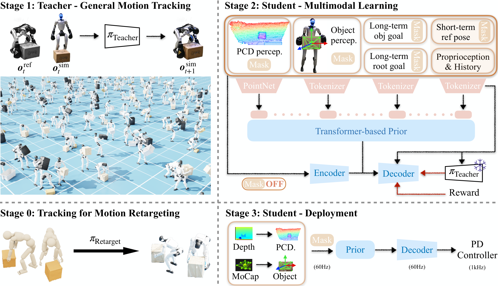

ULTRA
一套参数同时吃稠密参考与稀疏目标，缺哪一路观测就把哪一路遮掉。
ULTRA: Unified Multimodal Control for Autonomous Humanoid Whole-Body Loco-Manipulation
真机 Unitree G1：稠密参考跟踪 73%，稀疏目标跟随用动捕物体位姿是 80% 与 90%，换成第一人称点云降到 50% 与 60%。
01这篇要解决什么？
前两篇讨论的是怎样编排执行器，这篇讨论的是执行器本身能做到什么。它不引入任何高层模型，29 维关节目标全部由一条策略产生，没有自由度交给传统全身控制器，因此它给出的是分层系统里最底下那一层的上限与失败模式。
02先看一个场景
让人形把一只箱子从这里搬到那里。手里没有逐帧的参考动作，只有一个物体的目标位姿；物体的位置也不是动捕给的，要从头部深度图里抠出来。只会跟踪参考轨迹的控制器在这里无从下手，因为参考根本不存在。
03方法怎样运转？

- 01
重定向：把 RL 当成带物理约束的轨迹优化
一条统一的 RL 策略把人与物体的动捕序列变成目标本体上物理可行的 rollout，不做逐条轨迹的优化，也不为新数据重训。奖励是末端锚点位置、链接方向、物体位姿、掌面到物体表面的偏移、接触事件对齐与能量正则六项相乘，运动学、动力学与接触由仿真器的转移本身强制，不写成显式约束。
- 02
特权教师：换成全链接跟踪，并被反复打断
另训一条特权教师去跟踪这些 rollout。它用部署时的控制接口与力矩上限，训练时却看得到完整状态与稠密参考残差；奖励模板不变，稀疏锚点换成全链接跟踪。为了让学生学到带恢复的行为，这一阶段随机化物理属性并注入推搡，早停条件是摔倒、偏差过大或接触不匹配持续 20 帧。
- 03
学生：多模态切成 token，可用性掩码决定哪路生效
学生只看部分观测：本体感觉、目标、物体状态与点云各自编码成 token，由轻量 transformer 融合，掩码决定哪些参与注意力。目标那一路含长程物体变换、长程根部变换与下一帧局部状态变化。蒸馏走 DAgger，采样由教师渐变为学生；潜变量由特权后验与先验相加，部署只取先验。
- 04
RL 微调：一部分环境改跑目标到达
在蒸馏好的学生之上做 PPO 微调，把一部分并行环境切成目标到达，其余继续做蒸馏更新以保住先验。物体目标、根部目标与各自的初始状态随机取偏移，点云上叠抖动、丢点与遮挡。奖励是稠密接近项加逐步推进项；关键是目标项按掩码门控，看不见的目标既不计奖励，也不进成功判定。
- 05
部署：同一套参数靠掩码切三种模式
测试时只喂学生自己的观测，潜变量从先验采样。解开局部参考就是高保真跟踪，遮掉局部参考、放开长程目标就是目标条件控制，遮掉动捕物体位姿、放开点云就是视觉操作。点云从深度单独抽出来：反投影、裁前向区域、去地面、取最大簇当作箱子。动作是 29 维关节目标位置，交给 PD 控制器。
# 阶段一 重定向：单一 RL 策略把人—物动捕变成本体上物理可行的 rollout
r_track = r_p · r_r · r_obj · r_int · r_ct · r_eng # 末端锚点 + 物体 + 接触对齐
# 阶段二 特权教师：同一奖励模板，稀疏锚点换成全链接跟踪；加随机化与推搡
# 阶段三 蒸馏：DAgger 采样，学生只看部分观测
o_s = [proprio, goal, object, pcd, m] # m 是可用性掩码，缺哪一路就 gate 掉
z = z_prior(m(o_s)) + z_res(o_s, o_teacher) # 64 维潜变量，部署只取 prior
L = |a_s − a_teacher|² + λ_KL·KL(q ‖ p) + 辅助重建 # λ_KL 由 0.001 升到 0.1
# 阶段四 RL 微调：部分环境改跑目标到达，目标项按掩码门控，看不见就不计分
for t in 部署:
o_s = 遮掉稠密参考，只留长程物体目标与点云
a_t = pi_student(o_s, z ~ prior) # 29 维关节目标位置
执行(PD(a_t)) # 没有任何自由度交给传统全身控制器
# 成功判定：不摔倒，且末态与目标的距离小于 0.3 m方法与结果的原文定位见本页引用。
04跟着这个场景走一遍
教学推演：回到上面的场景。第一步，这次搬运的示范不是人直接演给机器人看的：一条 RL 重定向策略把人与物体的动捕序列在仿真里跑成目标本体上物理可行的 rollout，奖励把末端锚点、物体位姿、掌面到物体表面的偏移与接触事件对齐乘在一起，物理可行性由仿真器保证，而不是写成运动学约束。第二步，另训一条特权教师去跟踪这些 rollout，它用部署时的控制接口与力矩上限，但看得到完整状态与稠密残差，并被随机化与推搡反复打断，好让后面学到的是带恢复的行为。第三步，学生只看得到部分观测，本体感觉、目标、物体位姿与 64 点点云各自编码成 token，掩码决定哪些进注意力；采样从教师逐步过渡到学生，潜变量由特权后验与先验对齐训练，部署时只取先验。第四步，微调把一部分并行环境切成目标到达，目标与初始状态随机偏移，点云上叠抖动、丢点与遮挡，目标项按掩码门控，看不见就不计分。第五步，回到这次搬运：把稠密参考那一路遮掉，只留长程物体目标与点云，策略每步出 29 维关节目标位置交给 PD 控制器，箱子的位置由深度图去地面、取最大簇得到。要说清没做到的：整条链上没有任何模块回答刚才那一下做成没有，扰动只能靠训练时留下的裕度吃掉；箱状物体与刚性手是硬前提；真机试次少到个位数，从动捕换成第一人称点云就掉三十个百分点，这一段差距是感知的，不是控制的。
05实验到底表现怎样？
仿真在 IsaacGym 训练、MuJoCo 复核，真机是 Unitree G1。数据取一份人与物体动捕的修正子集，只用四类箱状物体，经轨迹与物体缩放增广到约 6 倍。表 IV 是真机结果，稠密跟踪不分方向合成一个数字，稀疏目标跟随分纵向与横向两列。
作者报告的实验结果 · v2
| 表 IV · 真机设置 | 纵向 | 横向 |
|---|---|---|
| 稠密参考跟踪（不分方向） | 73%（19/26） | 同一条目 |
| 稀疏目标跟随 · 动捕物体位姿 | 80%（8/10） | 90%（9/10） |
| 稀疏目标跟随 · 第一人称点云 | 50%（5/10） | 60%（6/10） |
原始证据：方法四阶段：§IV ↗ · 多模态学生策略：§IV-C ↗ · 目标跟随与微调消融：表 III ↗ · 真机结果：表 IV ↗
同一套参数下，把物体位姿从动捕换成头部深度点云，稀疏目标跟随从 80% 与 90% 掉到 50% 与 60%，这一档差距衡量的是感知而不是控制。表 IV 的表注写每项两次试验，分母却是 26 与 10，论文没有解释两者怎么对上，这些小样本数字不宜再做横向比较。
06收益来自哪里，又停在哪里？
消融与机制证据
表 III 在 MuJoCo 上每设置取 20 条动作，只拆 RL 微调一项：同分布目标下点云 16/20 升到 19/20、纯位置 14/20 升到 16/20；换成带随机偏移的分布外目标，是 5/20 升到 9/20 与 4/20 升到 12/20。收益集中在分布外。
结论的适用边界
模型来源这一篇最干净，也最该看清成本落在哪里：没有接入任何现成的语言或视觉语言模型，重定向策略、特权教师、多模态学生与 RL 微调四个阶段全部由作者训练，点云走一个从头训的 PointNet，另一个小型语言编码器只用在潜空间的语义聚类分析上，不参与控制；作者在限制里自己写明，未来应当接入预训练感知模型而不是从头训。前提成本因此集中在仿真与数据：数千个并行环境、约 59 Hz 的控制频率、整套域随机化与点云噪声表，数据是一份人与物体动捕的修正子集，只覆盖四类箱状物体，手是刚性的，增广后约为原来的 6 倍。可比性要单独看：仿真与真机不是同一套任务，表 III 是每设置 20 条动作的 sim-to-sim，表 IV 是真机，表注写每项两次试验却给出 19/26、8/10 这样的分母，论文没有解释。成功判据是不摔倒且末态距目标 0.3 米以内，没有中间进度指标，差一点点与完全没动在数字上一样。
07放回全书的脉络
放在 π₀.₅ 与 RT-2 那一层读：先看清被调用的执行器接受什么指令，再回头看 Cybo-Waiter 与 Spatial Brain 塞给它的是什么。
08把阅读变成一个小研究
固定一条全身策略，把一个长程目标换成一串中途路点，比较整段成功率与摔倒次数的变化。
先自己回答：这项实验怎样才有解释力？
把目标切碎通常抬高单段成功率，却让接缝变多。摔倒次数与整段成功率要分开记，只看其中一个常会得出相反的结论。
- 用自己的话说出这篇改变了哪个模块。
- 画出它的输入、输出和一次失败如何被处理。
- 复述一个结果，同时说清基线、指标与实验条件。这一问不给答案，材料在第 05 节。
先自己答，再看前两问的参考答案
这篇改了哪个模块改的是控制器的条件接口，而不是在它上面再加一层。稠密参考、长程物体目标、长程根部目标、下一帧局部状态变化与离散命令被统一切成 token，再配一份可用性掩码决定哪些进注意力；缺哪一路就遮掉哪一路，同一套参数因此能在跟踪、目标跟随与视觉操作三种模式间切换。潜变量走变分瓶颈，负责在稀疏目标下补齐被留空的中间动作；局部跟踪另走一条残差捷径绕开它。动作出口没有变：29 维关节目标位置交给 PD 控制器，没有任何自由度留给传统全身控制器。
输入、输出与一次失败如何被处理输入分五块：本体感觉与十步历史、全局根部残差、离散命令、局部关节残差，以及物体侧的位姿残差与 64 点点云，末尾跟着一份掩码，总维度 1496。输出是 29 维关节目标位置，以约 59 Hz 交给 PD 控制器，中间没有轨迹规划，也没有另一层全身控制器。训练时潜变量由特权后验与先验相加，部署时只从先验采样。失败通路要分两处说。训练里有一条：早停条件是摔倒、偏差过大或接触不匹配持续 20 帧，微调阶段的目标项按掩码门控，看不见的目标不计奖励也不进成功判定。运行时则没有失败检测与恢复，没有任何模块回答刚才那一下做成没有，策略只能在下一帧观测里继续闭环，靠域随机化与推搡训出来的裕度吃掉扰动。作者列出的真机失败是摩擦不足导致抓取滑脱、深度噪声与遮挡让点云抽取失效，以及超出恢复裕度的扰动；动捕模式下标记点被遮还会让物体位姿抖动漂移，级联成不稳定的跟踪。
一套参数同时吃稠密参考与稀疏目标，缺哪一路观测就把哪一路遮掉。
↗带着位置回到原文
首发日期用于时间排序；以下方法与结果对应 v2。数据为论文作者报告，本讲义没有独立复现实验。
QA就这一页提问或讨论
对某个数字、某条边界或某个推演有疑问，欢迎直接留言：讨论按页面分开，回复会保留在 XinrunXu/awesome-agentic-robotics-papers 的 Discussions 里，需要一个 GitHub 账号。